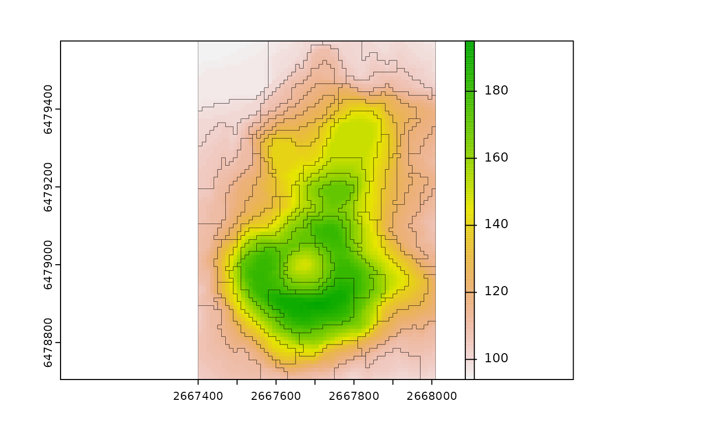
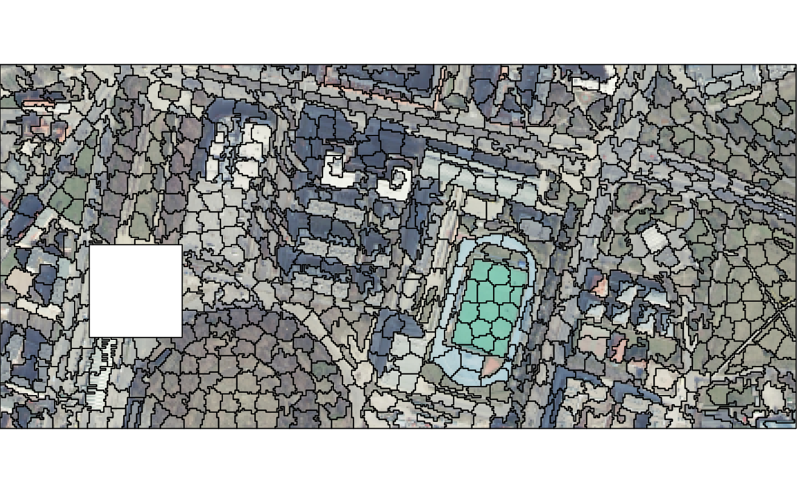

Creates supercells based on single- or multi-band spatial raster data. It uses a modified version of the SLIC Superpixel algorithm by Achanta et al. (2012), allowing specification of a distance function.
supercells( x, k, compactness, dist_fun = "euclidean", avg_fun = "mean", clean = TRUE, iter = 10, transform = NULL, step, minarea )
| x | An object of class SpatRaster (terra) |
|---|---|
| k | The number of supercells desired by the user (the output number can be slightly different!).
You can use either |
| compactness | A compactness value. Larger values cause clusters to be more compact/even (square). A compactness value depends on the range of input cell values and selected distance measure. |
| dist_fun | A distance function. Currently implemented distance functions are "euclidean" and "jensen_shannon". Default: "euclidean" |
| avg_fun | An averaging function - how the values of a supercells' centers are calculated?
It accepts any fitting R function (e.g., |
| clean | Should connectivity of the supercells be enforced? |
| iter | The number of iterations performed to create the output. |
| transform | Transformation to be performed on the input. Currently implemented is "to_LAB" allowing to convert RGB raster to a raster in the LAB color space. By default no transformation is performed. |
| step | The distance (number of cells) between initial supercells' centers. You can use either |
| minarea | Specifies the minimal size of a supercell (in cells). Only works when |
An sf object with several columns: (1) supercells - an id of each supercell, (2) y and x coordinates, (3) one or more columns with average values of given variables in each supercell
Achanta, R., Shaji, A., Smith, K., Lucchi, A., Fua, P., & Süsstrunk, S. (2012). SLIC Superpixels Compared to State-of-the-Art Superpixel Methods. IEEE Transactions on Pattern Analysis and Machine Intelligence, 34(11), 2274–2282. https://doi.org/10.1109/tpami.2012.120
Nowosad, J. Motif: an open-source R tool for pattern-based spatial analysis. Landscape Ecol (2021). https://doi.org/10.1007/s10980-020-01135-0
#>#># One variable vol = rast(system.file("raster/volcano.tif", package = "supercells")) vol_slic1 = supercells(vol, k = 50, compactness = 1)#> Step: 11 #> Initialization: Completed #> Iteration: 1/10 Iteration: 2/10 Iteration: 3/10 Iteration: 4/10 Iteration: 5/10 Iteration: 6/10 Iteration: 7/10 Iteration: 8/10 Iteration: 9/10 Iteration: 10/10 #> Cleaning connectivity: Completed# RGB variables ortho = rast(system.file("raster/ortho.tif", package = "supercells")) ortho_slic1 = supercells(ortho, k = 1000, compactness = 10, transform = "to_LAB")#> Step: 10 #> Initialization: Completed #> Iteration: 1/10 Iteration: 2/10 Iteration: 3/10 Iteration: 4/10 Iteration: 5/10 Iteration: 6/10 Iteration: 7/10 Iteration: 8/10 Iteration: 9/10 Iteration: 10/10 #> Cleaning connectivity: Completed### RGB variables - colored output rgb_to_hex = function(x){ apply(t(x), 2, function(x) rgb(x[1], x[2], x[3], maxColorValue = 255)) } avg_colors = rgb_to_hex(st_drop_geometry(ortho_slic1[4:6])) plot(ortho)